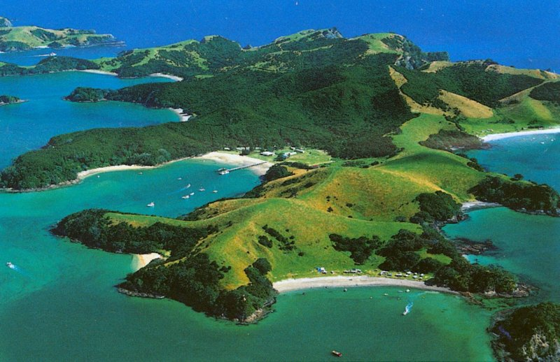

Прежде, чем начать, для развенчивания романтического ореола, хочу рассказать, что на этих чудных островах (а НЗ насчитывает 2 больших и 700 малых) еще каких-нибудь 200 лет тому назад состоялся самый крупный акт каннибализма в ноейшей истории. 66 пассажиров и членов экипажа судна "The Boyd" были съедены коренными обитателями Новой Зеландии, маори. Маори ранее были известны своим каннибализмом, например, съедали пленников, вместо того, чтобы кормить их - сплошная прагматичность.
Так вот, добро пожаловать.В Новой Зеландии проживает всего 4.3 миллиона человек. Места всем хватит, вам будут очень рады. Куда отправиться? А вот куда:
1. Залив островов, Северный остров, НЗ
2. Озеро Таупо и водопад Хука, Северный остров, НЗ
3. Бурлящая Роторуа, Северный остров, НЗ